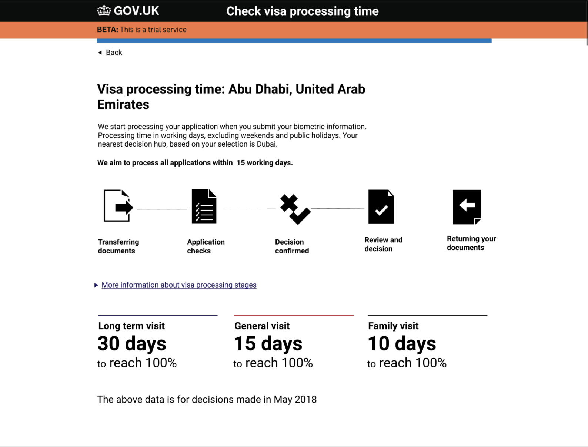

Project for UK Visas and Immigration, redesigning an existing webpage to be used in a survey to test whether users understand the information if presented upfront.
Within the design, the business wanted to incorporate the steps the application goes through before the user receives details and outcome of their application. The application goes through 4 stages before being returned to the user and it was important to clearly communicate this through the content displayed.
The original request was to display the processing stages horizontally across the screen. I made mock ups of this using Figma and in Sketch to highlight the problems with using icons and displaying them horizontally across the page.
I looked at different possible options, including using icons to present the information. I decided to push back on these, and highlighted the main accessability issues with icons and the reasons they're rarely used when displaying information on a page. It wasn’t until I presented the issues by using a digital mock up that I was able to push back on the request. I was able to remove the icons and change the design to an alternative design.
By pushing back on this, I was able to use existing components that have been used across the Home Office.
We also decided to remove some information from the page, it was important to keep going back to the question of what is the user need? The information on screen was ambiguous, and by agreeing to cut a lot of the information out, we were able to reduce the amount ofinformation on screen.
I made three different prototypes in the prototyping kit and used a randomiser that I found online. The randomiser looped to create an equal, but random split across the webpages.
I worked on the project as the main designer. I designed one end to end journey for 'visit visa' information and prototyped another content based design. When building the prototypes I included a randomiser and added an accessible auto-complete. The analysis of survey result is ongoing.